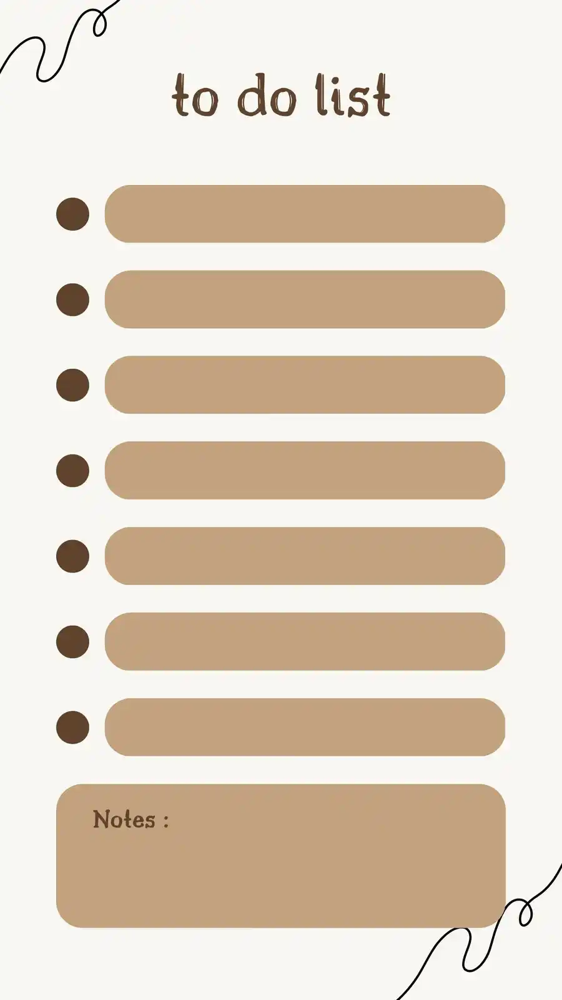

<div class="container mx-auto h-screen p-4">
  <div
    class="flex flex-col gap-2 lg:grid lg:grid-cols-4 lg:grid-rows-4 lg:gap-4 h-full lg:place-content-center"
  >
    <a routerLink="/calculator" class="col-span-1 row-span-1">
      <div class="bg-brown-primary h-full rounded-[40px] p-4">Calculadora</div>
    </a>
    <a routerLink="/BudgetComponent" class="col-start-1 col-end-2">
      
    </a>
    <a
      routerLink="/Masscalculator"
      class="col-start-1 col-end-2 row-start-3 row-end-5"
    >
      <div class="bg-green-primary h-full rounded-[40px] p-4">Masas</div>
    </a>
    <a routerLink="/cookingMusic" class="">
      <div class="bg-pink-primary h-full rounded-[40px] p-4">
        Playlist para cocinar
      </div>
    </a>
    <a
      routerLink="/todolist"
      class="col-start-3 col-end-4 row-start-1 row-end-4"
    >
      
    </a>
    <a routerLink="/hour" class="col-start-4 col-end-5 row-start-1 row-end-2">
      <div class="bg-pink-primary h-full rounded-[40px] p-4">Hora</div>
    </a>
    <a
      routerLink="/recipes"
      class="col-start-4 col-end-5 row-start-3 row-end-5"
    >
      
    </a>
    <a routerLink="/timer" class="col-start-4 col-end-5 row-start-2 row-end-3">
      <div class="bg-beach-primary h-full rounded-[40px] p-4">Timer</div>
    </a>
    <figure class="col-start-2 col-end-3 row-start-1 row-end-3 rounded-[40px]">
      
    </figure>
    <figure
      class="h-full col-start-2 col-end-4 row-start-4 row-end-5 mt-8 lg:mt-0"
    >
      
    </figure>
  </div>
</div>
